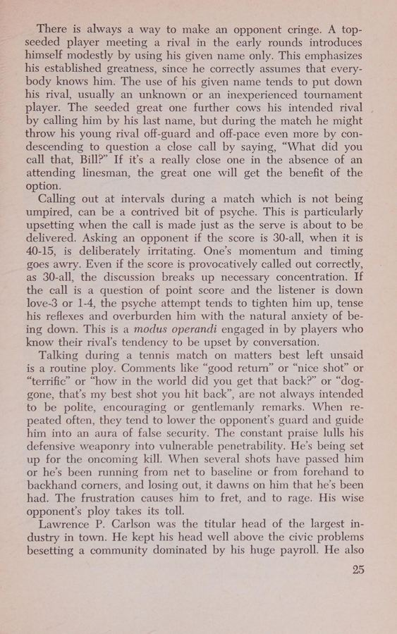

1. Đấu Trí Bằng Vỏ Não: Khoa Học Về Ra Quyết Định Dưới Áp Lực
Trong công trình nghiên cứu tiên phong của William Allen Mallory từ Trung tâm Nghiên cứu Hành vi Não bộ Sonoma (California), quần vợt được định nghĩa là một trong những môn thể thao đòi hỏi tốc độ xử lý thông tin của hệ thần kinh trung ương cao nhất. Trong khoảng thời gian từ 0.3 đến 0.5 giây kể từ khi bóng rời vợt đối phương, não bộ của bạn phải tính toán quỹ đạo ba chiều, ước tính vận tốc gió, đánh giá độ xoáy và ra lệnh cho hơn 200 bó cơ cùng phối hợp di chuyển.
Những tay vợt chiến thắng bằng trí não (winning by using your head) không phải là những người có phản xạ cơ bắp nhanh hơn bẩm sinh, mà là những người biết cách giải phóng vỏ não (cerebral cortex) khỏi sự lo âu, cho phép tiểu não (cerebellum) tự động kích hoạt các Chuỗi động học liên hoàn đã được lập trình qua hàng nghìn giờ tập luyện.

Hình 1.2: Nghệ thuật Gamesmanship: Nhận diện các đòn khiêu khích vô hình, bảo vệ sự điềm tĩnh nội tâm trước đối thủ tiểu xảo.2. Nghệ Thuật Tâm Lý Chiến (The Art of Gamesmanship)
Tiến sĩ Y khoa J. L. Diamond phân tích rằng trên sân đấu luôn tồn tại một cuộc chiến tâm lý ngầm gọi là "Gamesmanship" – nghệ thuật giành lợi thế tâm lý mà không vi phạm luật thi đấu:
- Các đòn phá vỡ nhịp độ (Pace manipulation): Đối thủ cố tình đi bộ thật chậm nhặt bóng khi bạn đang hưng phấn giao bóng ăn điểm liên tiếp, hoặc ngược lại, vội vã vào vị trí giao bóng khi bạn vừa kết thúc một pha bóng cứu mạng kiệt sức. Nhận diện được điều này giúp bạn chủ động kiểm soát nhịp độ của riêng mình bằng cách hít thở sâu và lau mồ hôi.
- Đòn khiêu khích vô hình qua ánh mắt và cử chỉ: Những cái lắc đầu chế giễu, tiếng thở dài cố ý hay những lời khen ngợi giả tạo nhằm gieo rắc sự nghi ngờ vào tâm trí bạn. Phương thuốc hóa giải duy nhất là duy trì sự tập trung tuyệt đối vào quả bóng, xem đối thủ như một bức tường phản xạ vô cảm.
- Tranh cãi điểm số và bóng chạm vạch: Khi đối thủ cố tình bắt bóng ngoài ở những điểm nhạy cảm, người chơi thiếu bản lĩnh sẽ nổi nóng, mất kiểm soát và tự hủy hoại ván đấu tiếp theo. Người chơi làm chủ tâm lý sẽ chấp nhận quyết định đó một cách lạnh lùng, dồn toàn bộ sự phẫn nộ tích cực vào cú giao bóng sấm sét ở điểm tiếp theo.
Bất cứ khi nào bạn để cảm xúc tức giận hay bực bội xâm chiếm tâm trí, bạn đã tự nguyện trao chiếc cúp chiến thắng vào tay đối thủ. Hãy giữ cho cái đầu lạnh như băng và đôi chân nóng như lửa.